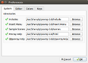

qtpovrayConfigure Directories | December 12, 2017 |

{kind=link}
You can configure several of the directories that qtpovray uses.
When a directory is validated, the red X turns to a green checkmark.
Includes Tells qtpov the directory that contains your POV-Ray include files.
Note, this directory is also passed to POV-Ray in the Library Path.
Validation requires the file colors.inc to be present in the directory.
Insert Menu defines the location of the data for the Insert Menu system.
Validation requires the file Shapes3.pov to be present in the directory.
Sample Scenes are included that show off some of POV-Ray's features. Source code is provided that you can cut and paste into your scene.
This feature is available from the Help menu.
Validation requires the file index.htm to be present in the directory.
POV-Ray Help contains the manual detailing POV-Ray's features.
This feature is available from the Help menu.
Validation requires the file index.html to be present in the directory.
Qtpovray Help You are Here
Qtpovray help describes the functionality of the gui.
Validation requires the file index.html to be present in the directory.